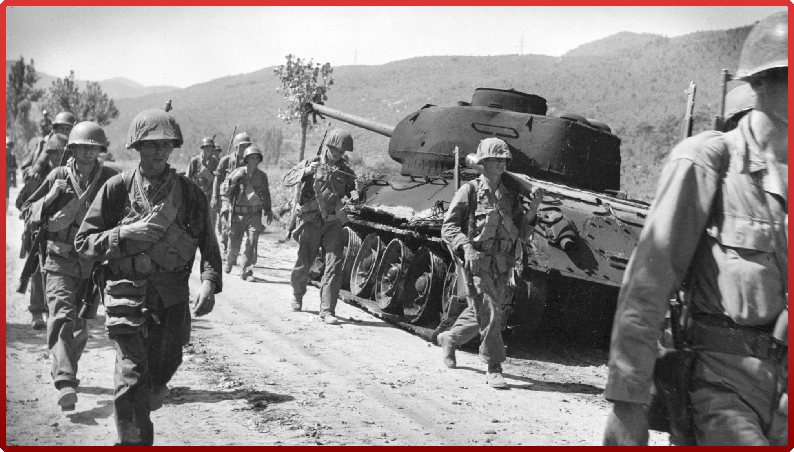

ИОСИФ СТАЛИН
ИОСИФ СТАЛИН
ВОЙНА В КОРЕИ
После окончания Второй мировой войны на территории Корейского полуострова, который давно являлся колониальным владением Японии, возникли советская и американская оккупационные зоны, границей которых стала 38-я параллель. В августе — сентябре 1948 г. на территории этих зон возникли два суверенных государства: Северная Корея (КНДР), где при активной поддержке советской стороны к власти пришли коммунисты во главе с Ким Ир Сеном, и Южная Корея (РК), где к власти при столь же активной поддержке «союзников» пришли проамериканские силы во главе с президентом Ли Сын Маном. Понятно, что выработанная для Кореи буферная формула стабильности могла работать только при взаимопонимании её главных гарантов — СССР и США. Но при начавшейся деградации советско-американских отношений эта формула сразу дала резкий сбой и вызвала к жизни первый военный конфликт, который принято называть Корейской войной (1950–1953). По мнению многих российских, прежде всего военных, историков, Корейская война довольно чётко распадается на четыре основных этапа: первый этап (25 июня — 14 сентября 1950 г.), который ознаменовался наступлением частей и соединений КНА, сумевших дойти до реки Нактонган и блокировать войска противника на плацдарме в районе города Пусан; второй этап (15 сентября — 24 октября 1950 г.), во время которого многонациональные американо-ооновские силы перешли в контрнаступление и вошли в южные районы КНДР; третий этап (25 октября 1950 г. — 9 июля 1951 г.), который ознаменовался вступлением в военный конфликт китайских «добровольцев», что привело к отступлению американо-ооновских войск и стабилизации линии боевых действий в районах, прилегающих к 38-й параллели; четвёртый этап (10 июля 1951 г. — 27 июля 1953 г.), во время которого активные боевые действия перетекали в тяжёлый переговорный процесс и наоборот.Ранним утром 25 июня 1950 г. северокорейские войска под командованием перешли демаркационную линию и с боями стали продвигаться в направлении Сеула. В тот же день Совет Безопасности ООН принял резолюцию с осуждением этой военной акции и потребовал немедленно отвести войска КНДР за 38-ю параллель. 27 июня 1950 г., не дожидаясь повторного обсуждения корейского вопроса в Совете Безопасности ООН, президент Г. Трумэн отдал приказ американским вооружённым силам оказать всемерную помощь южнокорейским войскам, положение которых было отчаянным. Руководство этой операцией было поручено генералу армии Дугласу Макартуру — командующему оккупационными американскими войсками в Японии. В тот же день Совет Безопасности ООН принял новую резолюцию с общей рекомендацией всем странам ООН оказать помощь Южной Корее. Однако 28 июня северяне взяли Сеул и отбросили южнокорейскую армию далеко на юг, где она удерживала лишь небольшой плацдарм в районе порта Пусан, где предполагалась высадка американских экспедиционных войск. 7 июля Совет Безопасности ООН принял третью резолюцию, в которой предусматривалось создание многонационального контингента сил ООН в Корее под американским командованием. С этого момента американское вмешательство в корейский конфликт получило правовое обоснование, а американские вооружённые силы стали действовать под флагом ООН. В результате военная обстановка на фронте резко изменилась и отступать теперь пришлось северянам. Между тем, как считают многие специалисты, теперь эта война с южнокорейской стороны уже фактически пошла не за восстановление прежнего статус-кво, а за объединение двух Корей под вашингтонским протекторатом. В этой ситуации по настоятельной просьбе Москвы и Пхеньяна в конце октября 1950 г. в войну вступила Китайская Народная Республика, 270-тысячная армия которая перешла китайско-северокорейскую границу и, остановив продвижение американо-ооновских сил, неожиданно перешла в контрнаступление. Пользуясь численным превосходством, китайские войска вытеснили противника с территории КНДР и стали стремительно продвигаться к Сеулу, который вновь пал в январе 1951 г. В Москве, Вашингтоне, Лондоне и Париже возникла атмосфера тревожного ожидания, поскольку новой большой войны никто, безусловно, не хотел. Высшее советское руководство предприняло энергичные шаги, чтобы убедить Мао Цзэдуна отказаться от плана уничтожения американской группировки, и наступление китайских войск было сразу остановлено. Более того, американо-ооновские войска даже смогли вновь перейти в контрнаступление и отодвинуть линию фронта к 38-й параллели, которая в целом совпала с демаркационной линией, существовавшей до начала Корейской войны. Тем не менее в начале апреля 1951 г. генерал Д. Макартур был смещён со своего поста, который занял менее воинственный генерал Мэтью Риджуэй, а в июле 1951 г. при негласной поддержке Москвы в Кэсоне начались переговоры представителей КНДР, КНР и США. Сами боевые действия не прекратились, но они стали носить уже довольно спорадический и по большей части локальный характер. В начале 1953 г., после прихода к власти нового президента США генерала армии Дуайта Эйзенхауэра и смерти И. В. Сталина, переговорный процесс по корейской проблеме получил новый импульс и завершился 27 июля 1953 г. подписанием договора о прекращении огня, который положил конец Корейской войне, хотя мирный договор между двумя странами не подписан до сих пор.